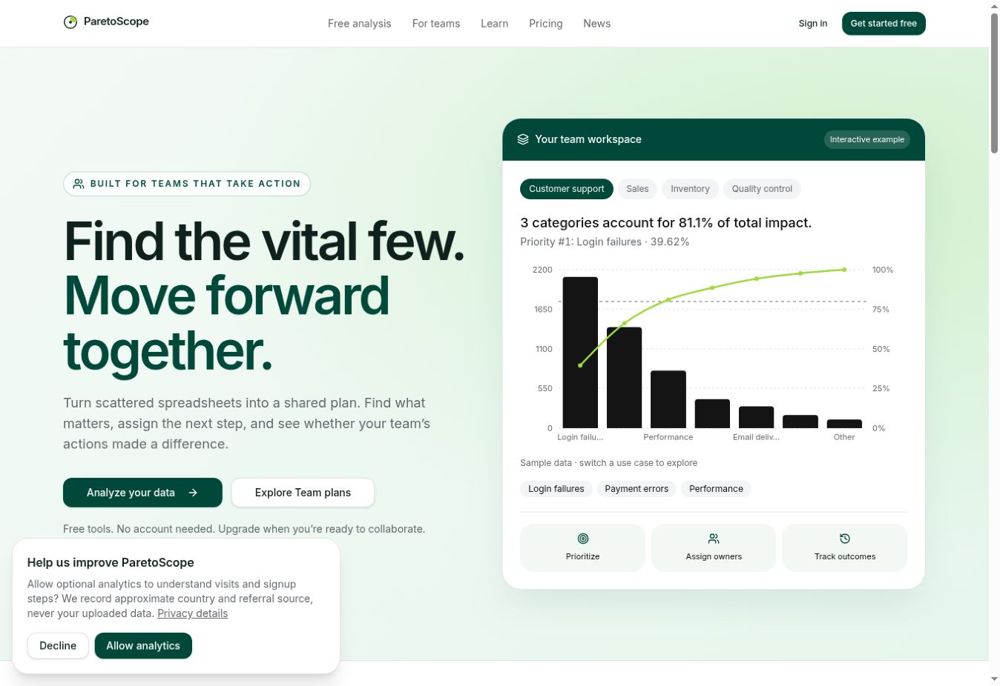
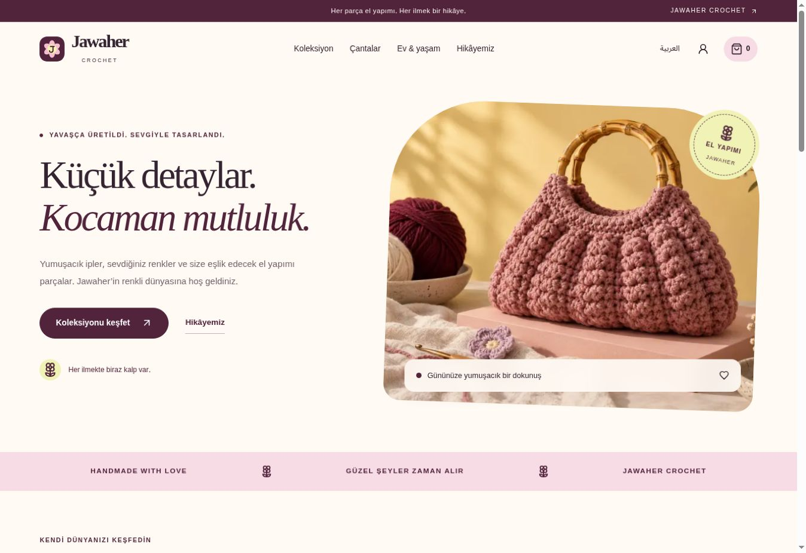
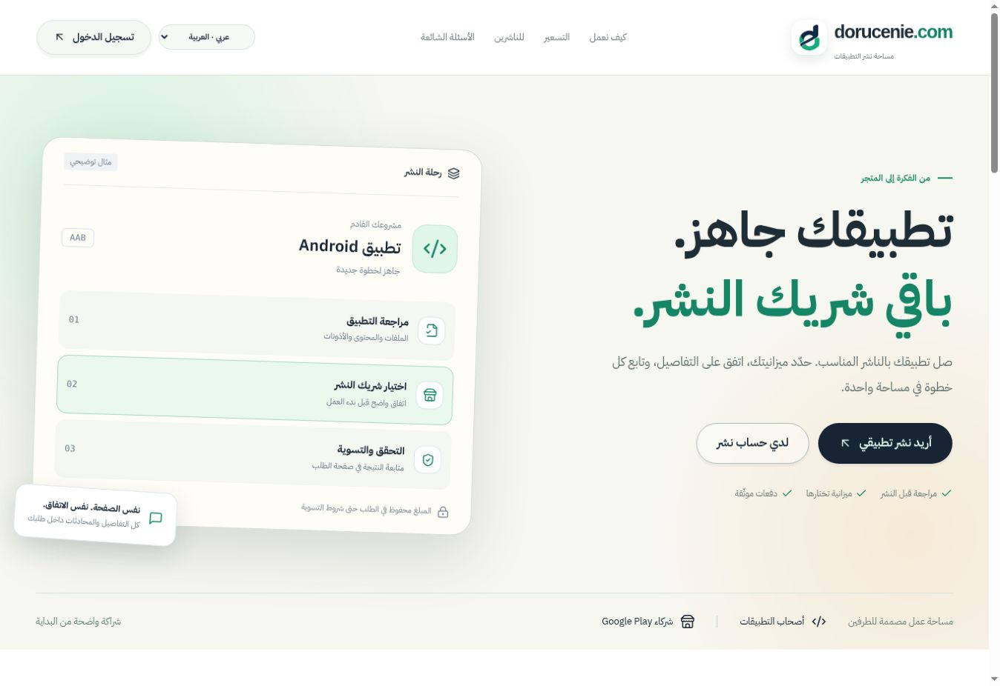
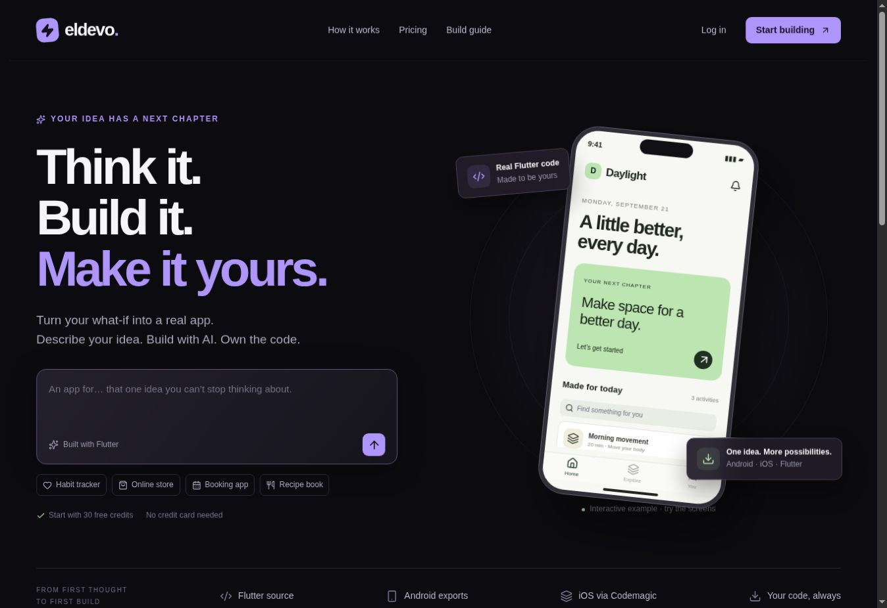
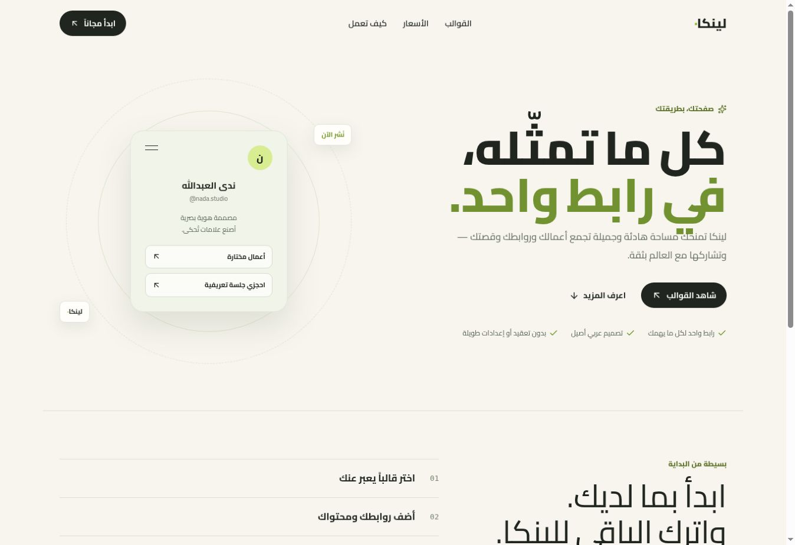
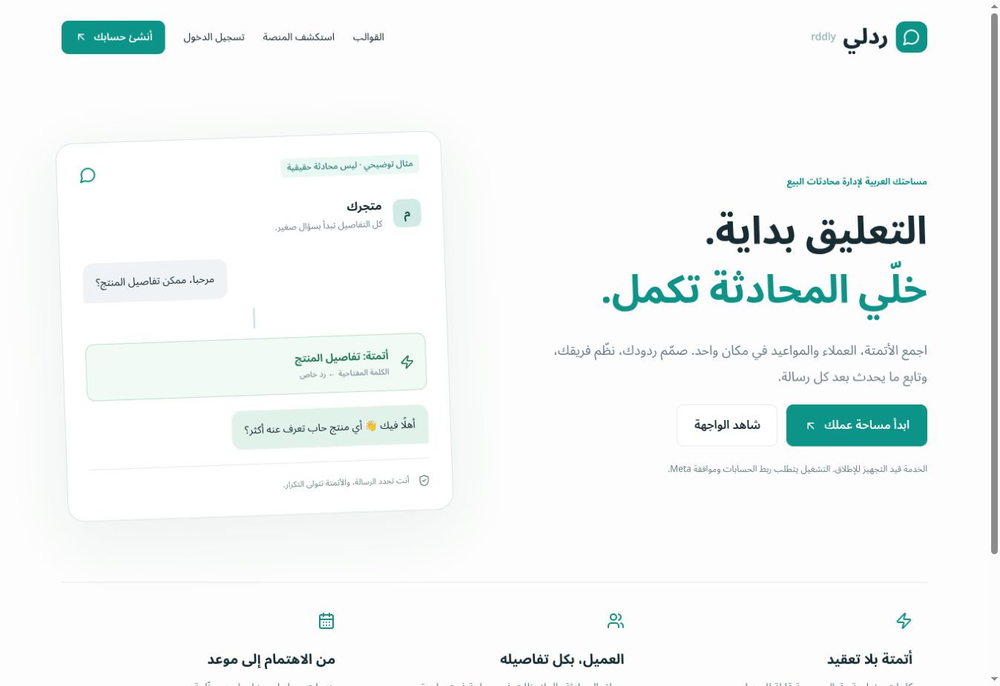

تحليل البيانات · تطبيق ويب01
ParetoScope
منصة لتحليل البيانات بمنهجية باريتو، وتحديد الأولويات ومتابعة عمل الفريق في مساحة واحدة.
Analytics · SaaS · Team workspaceزيارة الموقع ↗
مطوّر مستقل · إسطنبول، تركيا
أنا محمد دكرلي. أصمّم وأطوّر مواقع وتطبيقات أندرويد تجمع بين جمال التصميم وسهولة الاستخدام، من أول فكرة إلى الإطلاق.


تفاصيل صغيرة.
فرق كبير.
01 — أعمال مختارة
لكل مشروع قصته.
وهذه بعض القصص التي بنيتها.
منصة لتحليل البيانات بمنهجية باريتو، وتحديد الأولويات ومتابعة عمل الفريق في مساحة واحدة.
متجر للأعمال اليدوية، بهوية بصرية دافئة وتجربة تسوّق تعرض المنتجات وتفاصيلها بعناية.

مساحة تربط أصحاب تطبيقات أندرويد بشركاء النشر، مع واجهات للطلبات والمحادثات ومتابعة العمل.

واجهة منصة لبناء تطبيقات Flutter بالذكاء الاصطناعي، تبدأ بوصف الفكرة وتجمع المعاينة وإدارة المشاريع.

تجربة عربية تجمع الروابط والأعمال والقصة الشخصية في صفحة واحدة، مع قوالب تناسب المبدعين والمتاجر.

تصميم وتطوير واجهة لإدارة محادثات البيع والأتمتة والعملاء. المشروع قيد التجهيز للإطلاق.
02 — كيف أساعدك
سواء كنت تبدأ مشروعًا جديدًا،
أو تطوّر تجربة موجودة.
موقع يعكس هوية مشروعك، يوضح خدماتك ويجعل الوصول إليك سهلًا على كل الأجهزة.
تطبيق Flutter بواجهات واضحة وتجربة سلسة، مصمّم حول ما يحتاجه مستخدموك فعلًا.
حوّل خطوات عملك إلى تجربة رقمية مترابطة، من واجهة العميل إلى لوحة الإدارة.
03 — المطوّر وراء العمل
أنا محمد دكرلي، مطوّر مواقع وتطبيقات أندرويد مقيم في إسطنبول. أعمل على تحويل الأفكار إلى منتجات رقمية واضحة، جميلة وسهلة الاستخدام.
أجمع بين تصميم الواجهات وتطويرها وربطها بقواعد البيانات. نتفق على نطاق واضح، نراجع التقدم معًا، ثم نختبر التفاصيل قبل التسليم.
نحدّد الهدف والمتطلبات.
خطوات واضحة ومراجعة مستمرة.
تجربة مكتملة وتسليم منظّم.
الخطوة القادمة تبدأ بمحادثة
أخبرني عن فكرتك، ما تحتاجه والموعد الذي يناسبك.
لنحدّد معًا الخطوة الأولى.